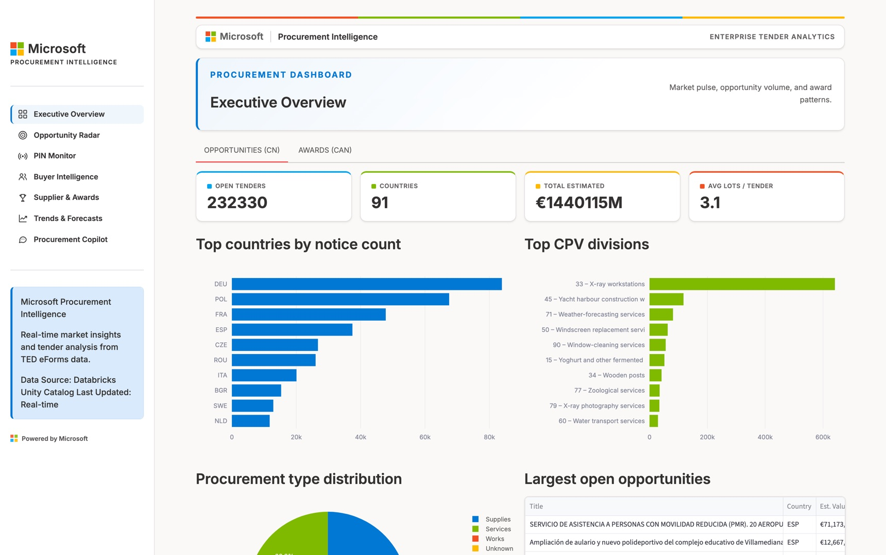
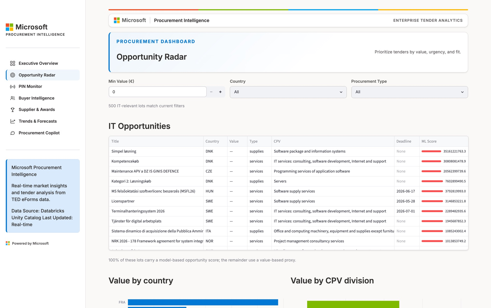
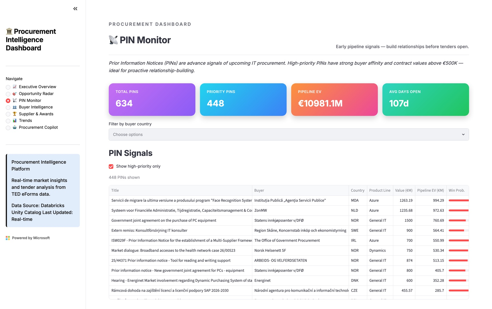

An end to end intelligence platform that turns the EU's public procurement feed into a daily commercial advantage for Microsoft. Live pipeline, live model, live dashboard.
Every public IT contract in the EU is announced in the open, on TED. In the last 30 days alone, 84,337 notices were published. The signal is public. The problem is scale and noise.
Peaking above 4,000 on busy days, across every sector and every member state.
eForms notices with multi-step reference chains. Not readable by humans at scale.
Analysts sample the feed by hand. Coverage is partial and timing is reactive.
A production data platform on Databricks that ingests, understands, and ranks the entire EU IT procurement market, then serves it to analysts through a dashboard and a conversational copilot.
TED eForms XML lands in a Bronze, Silver, Gold medallion architecture. Parsed with lxml, modeled with dbt, stored in Delta.
An XGBoost competition model feeds an expected value score for every open IT tender, every morning.
An affinity score for every contracting authority, plus a PIN Monitor that surfaces buying intent before tenders open.
An LLM agent that answers natural language questions, grounded exclusively in the Gold layer. It never writes SQL.
A classic medallion design, chosen because it keeps raw data immutable, transformations testable, and the serving layer fast.
Daily packages from all EU member states. Raw files kept immutably, so any run can be replayed.
lxml extracts notices, lots, award criteria, and organizations into Delta tables. Checkpointed and incremental.
dbt models resolve re-published notices with two layer dedup and enrich lots with CPV reference data.
Serving tables for the dashboard, the copilot tools, and the daily scoring job. One consistent source.
Seven page Streamlit app and a grounded LLM agent, both reading the same Gold tables.
The tenders Microsoft partners can still bid on. These feed the Opportunity Radar.
Who won, at what value, against how many bidders. The number of bids is our ML training signal.
Buyers announcing what they plan to procure, months ahead. The earliest signal in the market.
Trade-offs were accepted knowingly. Streamlit gives up enterprise SSO and mobile layout, which are not critical for a focused analyst team.
The insight: tenders that attract few bidders are more accessible. Bid counts from award notices let us learn competition patterns with zero proprietary data.
The classifier predicts Low, Medium, or High competition from historical award notices: value, CPV, country, procedure, and buyer type.
Buyer affinity blends recency weighted CPV relevance (70%) with the share of open procedures (30%), on a 180 day half life. Recent behaviour counts double.
Scores are a systematic ranking, not calibrated win probabilities, and the dashboard says so. Microsoft's real bid history would calibrate it.
234,164 open tenders, 93 countries, live KPIs.
Every open IT lot, ranked by ML score.
634 pre-tender signals, mapped to product lines.
Top authorities, legal types, spend patterns.
228,117 awards and the criteria behind them.
Daily notice volume and market momentum over time.
Natural language answers, grounded in Gold data.
PINs and tenders tagged Azure, Dynamics, M365, or General IT.
Every page is a screenshot of the deployed dashboard, taken from the same app you can open at the live link. The tour cycles on its own, or click any page.



| Buyer | Country | Tenders |
|---|---|---|
| AENA SME, SA | ESP | 5 |
| Servicio Andaluz de Salud | ESP | 68 |
| Viešoji įstaiga CPO LT | LTU | 444 |
The model chooses among nine pre-built query functions. It cannot write arbitrary SQL against the warehouse, by design.
The system prompt forbids invented numbers. Every figure in an answer traces back to a Gold layer query result.
Rate limits, malformed tool calls, off topic questions, and out of range years are all handled gracefully.
We start here: ask "who are the top 5 buyers by spend?" and watch it call a Gold layer tool and answer with real figures.
Then the whole EU market on one screen: 234,164 open tenders across 93 countries, updated this morning.
Filter to a country, watch the ranking reorder, then jump to the buyers who are about to publish tenders.
Everything below is live in the deployed product today, measured directly from the Gold layer on July 3, 2026.
Every open Contract Notice in the EU, refreshed daily.
The EU's 27 member states, plus EEA and international buyers that publish on TED.
Historical outcomes with bid counts, our training signal.
Contract value flowing through the awards layer.
Ingested, parsed, and scored without a single manual step.
Expected value across 634 live PIN signals.
The business outcome: an analyst opens one page each morning and sees every open EU IT tender ranked by expected value. A task that previously was not done at all.
We would rather show you honest limits than inflated claims. Each limitation above has a designed path to resolution.
A production pipeline, an ML ranking engine, a live dashboard, and a grounded AI copilot. Built end to end on public data, designed to compound with Microsoft's own.